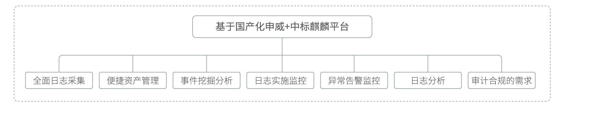
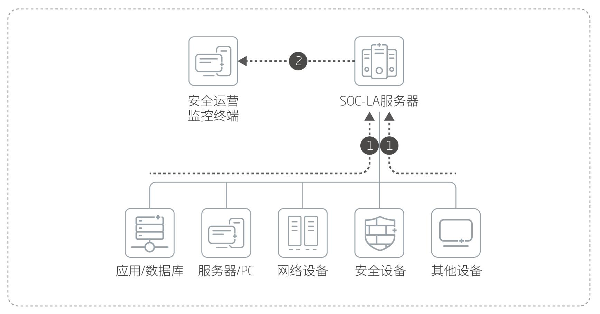
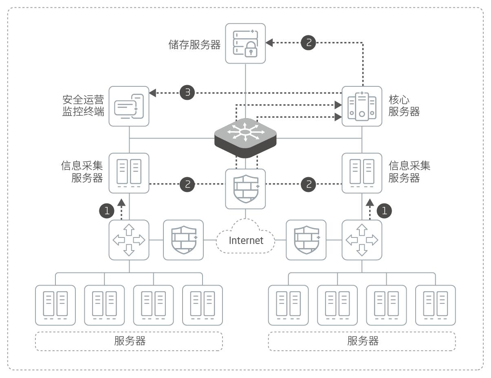

产品概述
随着国产化信息安全的不断发展，赛博特安跟随国产化替代工程，结合在网络安全领域多年的理论和实践经验，推出基于国产化平台的日志审计系统。赛博特安NetEye日志审计系统（SOC-LA）支持多种日志采集方式、日志支持种类多、扩展灵活，可智能关联各类日志信息，能够为用户从纷繁复杂的日志中萃取出具有价值的部分。
应用价值

产品亮点
支持多种日志采集方式
包括Syslog、SNMP、Trap、数据库、本地文件、控制台标准输出、TCPSocket等，同时扩展灵活，对于非主流的日志格式可快速自定义规则进行解析。
强大的二次分析能力
系统内置了大量审计策略模板，涵盖了常见的、对企业非常实用的审计策略模板，同时能够方便的自定义审计人员、行为对象、审计类型、审计策略等基本配置，提供强大的日志关联分析能力。
自学习的基线建模分析
基于统计的关联，通过分析记录日基线和周基线的自动生成基线数据，并以此基线建模，判断信息系统中的安全事件。
应用场景


产品规格
| 产品形态 | 2U |
| 接口规格 | 4个千兆电口 |
| 扩展槽 | 3个插拔扩展槽 |
| 电源 | 双冗余电源 |
| 硬件 | 申威处理器 |
| 操作系统 | 中标麒麟 |